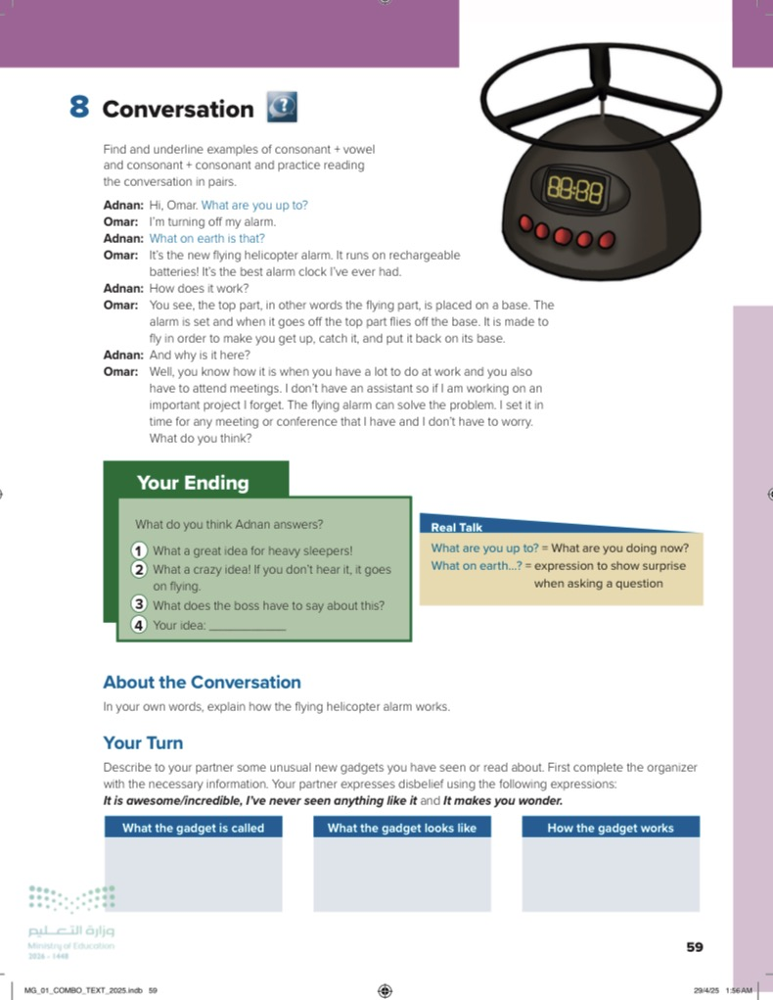

المحادثة التفاعلية
صفحة 590.25× بطيء جدًا — 1× السرعة الطبيعية

اضغط زر الاستماع أو اضغط على موضع جملة في الصفحة لسماعها وحدها.
تُستخدم تسجيلات HeyGen الطبيعية بصوتين مختلفين لعدنان وعمر.

تُستخدم تسجيلات HeyGen الطبيعية بصوتين مختلفين لعدنان وعمر.